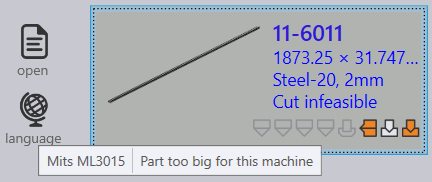
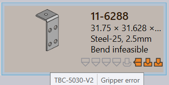

Praxis assigns Bend Infeasible state to the part if no valid bend solution is found during the auto tooling. User can ignore/fix the tooling error to resolve the Bend infeasible error. A similar change has also been applied to the cutting workflow. The part is put in Cut infeasible state if no feasible cutting solution is found.
 